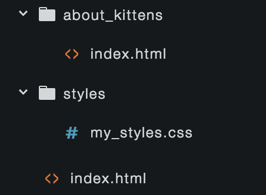

The HTML+CSS Basics Workshop is a one-day introduction to creating web content. This class will focus on practical, technical skills with hands-on challenges and lots of time to practice and ask questions. Topics will include writing basic HTML and CSS, working with images and links, finding answers online, and using the development tools built into chrome.
| Time | Unit |
|---|---|
| :30 | Semantic Markup: How HTML and CSS work together |
| 1:15 | HTML: Marking up a web page |
| :45 | Documentation: How to find answers |
| 1:15 | CSS: Styling a web page |
| :30 | Using the Chrome developer tools |
| :30 | Using VS Code and Working Locally |
| :45 | Links, Images, Paths |
| :30 | Mac OS Command Line Basics |
| :30 | Git Basics |
| :30 | Github |
| :30 | Github Pages |
In documents, different words have different purposes. Some words form titles, some words form regular paragraphs, some are parts of lists. In web development these purposes are referred to as semantics. Often the semantic purpose of text informs how it should be styled. Title text is often bigger than paragraph text. Lists may be indented.
HTML and CSS are used together to explain the semantics of documents how they should look. HTML is used to describe the semantics of the document in a way that a web browser can understand. CSS is used to set style properties such as the font size and color to associate with different types of content.
If you want to make all the lists on a web page red, you need to use HTML to “mark up” where the lists are, and CSS to color them.
Semantically mark up the New York Times. [10 min]
HTML stands for HyperText Markup Language. It is used to provide information about the structure, organization, and purpose of content on a web page.
Properly marked up content can be understood by the web browser, allowing it to style the document way you want. Styles are defined in a separate language called CSS.
| HTML | CSS | Javascript |
|---|---|---|
| Content | Style | Behavior |
| What it says | What it looks like | What it does |
Here is an example of a very basic HTML web page.
<!DOCTYPE html>
<html>
<head>
<title>HTML Basics</title>
</head>
<body>
<h1>Hello, world.</h1>
<p>This is a basic web page.</p>
<img src="kitten.jpg">
</body>
</html>
A few things to note in the above example:
<h1>) to mark up the purpose of text in a document.<h1>...</h1><h1> and <body> and <p></h1> and </body> and </p><h1> is inside <body> and <body> is inside <html><br> and <img>, insert content into a page. Because these tags no not enclose content, they do not have a closing tag.| Tag | Purpose |
|---|---|
html | wraps the entire document |
head | used to contain information that is not displayed on the web page |
title | used to mark text that should be displayed in the document’s tab (and bookmarks) |
body | used to mark the main content of the document |
h1 | Headlines |
h2…h6 | Less important headlines |
p | Paragraphs |
br | Creates a line break without starting a new paragraph (unpaired) |
ol | A numbered list |
ul | An unnumbered list |
li | An item in a list |
em | emphasized text |
strong | strong text |
code | code text |
blockquote | Extended quotation |
a | creates a link |
img | inserts an image (unpaired) |
In interesting feature of HTML is that browsers will try very hard to show your document, even if there are mistakes in your HTML. In some ways this makes it easier to user and learn HTML: a simple mistake won’t bring your whole page down. In other ways it makes it harder to learn and use: you don’t get clear, immediate feedback when you make a mistake.
Webpages are built with three programming languages (HTML, CSS, and Javascript) and run on a variety of web browsers each with their own quirks. That is a lot of information to try to remember, and web technologies are constantly changing and growing. Finding technical answers online quickly is one of the most important skills required when making webpages.
Like any skill, you get better at searching for info when you practice.
rounded corner -> rounded corner cssborder properties -> border properties mdndotted line css -> dotted border csscommand-f| Site | Description |
|---|---|
| DevDocs | Online reference application with info for many popular web technologies. |
| Stack Overflow | Question and answer site with huge, well-curated database |
| MDN | Detailed, reliable technical documentation on HTML/CSS/Javascript and other web technologies. |
| HTML5Rocks | Tutorials and articles on specific aspects of HTML5 |
| CSSTricks | Tutorials, quick reference, and other resources related to CSS |
CSS stands for Cascading Style Sheets. CSS is used to describe presentation styles for elements on a web page. CSS allows you to specify the size and color of text, borders, shadows, even the overall layout of the page.
| HTML | CSS | Javascript |
|---|---|---|
| Content | Style | Behavior |
| What it says | What it looks like | What it does |
First, lets look at some css:
h1 {
font-size: 50px;
color: red;
}
h2, h3 {
font-size: 25px;
}
h3 {
color: blue;
}
The example above has three rulesets. Lets look at the first one more closely:
h1 {
font-size: 50px;
color: red;
}
This ruleset tells the browser to make all the <h1> elements on the webpage big and red. A few things to note about rulesets:
h1. This selector tells css that the following styles should be applied to any h1 elements on the page.h1, h2{} group two declarations.color;:red;| Tag | Example Values | Purpose |
| — | -------------- || —
color | red #00FF00 | Sets the font color
background-color | red #00FF00 | Sets the background color
|
font-size | 12px 2em | Sets the size of the font
font-weight | bold normal | The font weight
font-style | italic normal | Specify style variation of a font
line-height | 1 1.5 | Spacing between lines of text
|
padding | 5px 1em | Extra space inside element
margin | 5px 1em | Extra space outside element
margin-left | 5px 1em | Just the left margin
margin, padding, border can be applied all the way around an element or just to the -top, -right, -bottom, or -left.
When a CSS property is applied to an element, it may be applied to the element’s children as well. This is called inheritance.
In the following example, the color property will be applied to the p element. The strong element’s text will also be red because the color property is inherited.
<p>This paragraph has a <strong>bold part</strong></p>
p { color: red; }
Not all CSS properties are inherited. You can check the MDN CSS reference to find out if a property is inherited.
Generally it good CSS practice to apply styles broadly. For example, you might make all h1s look a certain way. This leads to shorter, easier to understand CSS and more consistent visual design. In practice, however, you often need to get more specific. You might want a few h1s to be a different color for example.
You can use HTML and CSS together to create and style classes. Classes let you specify a specific set of elements.
<h1>Apples</h1>
<p>Apples are fruit.</p>
<h1 class="important">Bears</h1>
<p>Apples are animals.</p>
<h1>Cake</h1>
<p class="important">Cake is delicious.</p>
h1 {
color: gray;
}
.important {
color: pink;
}
. is used to apply a ruleset to elements marked with the important class.It is common that two rulesets will apply to the same element. In the example above, both the h1 ruleset and the the .important ruleset apply to the “Bears” header. Since both rulesets set the color property, css must choose which property value to use. The set of rules that determines which rule to apply is called the cascade. Crucially, CSS gives priority to the more specific selector’s rule. CSS considers class selectors to be more specific than element selectors, so the important header ends up pink.
Understanding how CSS assigns priority is important as your projects grow more complex. Take a look at some of the linked resources for more detailed information.
class attribute to an element that requires special styling.Chrome has a powerful set of built-in tools for web developers. Using these tools you can better understand how the browser interprets your HTML and CSS, see how long it takes to load each part of your page, and debug problems.
When working with HTML and CSS the Elements panel is very useful. This panel shows you which CSS rulesets the browser is using for each element. To inspect an element, you can right click on it and choose “Inspect” from the pop-up menu.
The left side of the Elements panel shows the structure of your HTML. The right side shows all the rulesets that are applied to the selected element. This view shows where each ruleset is defined and which properties are overridden by other rulesets.
You can even add temporary CSS declarations from the DevTools to quickly try out possible styles.
Websites are made out of .html, .css, and .js files. While these are different languages, they are all based on simple text files meant to be written and read in a text editor.
There are many popular text editors, here are just a few:
I have used all of these editors—and many others—on projects in the past. Lately, I have been using VS Code for small web projects.
VS Code is a light- to mid-weight text editor from Microsoft. Its full name is Visual Studio Code, but it is separate software from Visual Studio, which is a much more complex editor and IDE. VS Code offers text editing, syntax highlighting, debugging, and Git integration.
VS Code also has a built-in Extension manager and many first- and third-party extensions. I suggest you install these extensions right away.
| Extension | Description |
|---|---|
| Beautify | Automatically format your code. VS Code actually uses js-beautify internally, but this extension allows you greater configuration. |
| ESLint | Automatically detect and report common errors in your Javascript. |
| Live Server | Easily self-host your web projects right from VS Code. |
| A Keymap | If you are used to Atom or Sublime, The Atom Keymap or Sublime Text Keymap extensions will remap your keyboard shortcuts to what you are used to. |
When you code, you use your text editor a lot: it is a fundamental tool in your kit. It is critical that you understand the core features of your editor and how to use them. The very basics of VS Code are covered in this short video. A complete look at the interface can be found in this overview. VS Code also has a pretty neat interactive playground—you can find the link in any new VS Code window—that tours you through features like multi-cursor editing, autocomplete, and refactoring.
The Command Palette gives you access to many of the actions VS Code can peform for you. You can open the palette with ⇧⌘P and then type in part of the action’s name. For example, typing in for will let you quickly access the "For mat Document" action.
You can view simple HTML pages by simply opening the .html file in a browser, directly from your local filesystem. As you begin to use more Javascript in your pages, you may find that this approach no longer works. Browsers impose restrictions on what javascript can do from pages that are opened directly from the filesystem.
Rather than opening your files from the filesystem you can run a local web server: a program that works like a full-blown server, but runs on your local computer. Your web browser can connect to this local server and receive files just as if they were hosted on a remote server.
The VS Code Live Server extension lets you run a local server very easily, right from VS Code. It also has built in live-reloading: every time you save your work in VS Code your browser will automatically refresh to show you the change.
Create a Project
~/Documents/Projects.
Start your HTML
index.html in your project folder.<!DOCTYPE html>
<html>
<head>
<meta charset="utf-8" />
<title>Page Title</title>
</head>
<body>
<h1>Hello, HTML!</h1>
</body>
</html>
index.html in Chrome to see it rendered.index.html, save, and reload in Chrome to see it.Use a Live Server
Possibly the most important feature of the WWW is the ability to link resources together. Web pages can direct users to other webpages thorugh hyperlinks, and can embed images, videos, scripts, style sheets, and other assets through linked assets.
Most web pages today are made up of many assets: the .html file itself, one or more .css files, one or more .js files, several .jpg, .gif, and .png files.
The New York Times home pages loads over 200 files.
Hyperlinks provide an easy way for site authors to connect their pages other pages. These pages can be part of the same site or part of other sites hosted anywhere in the world.
To create a hyperlink, you use an anchor tag. Anchor tags look like this:
<a href="http://google.com">Look it up!</a>
href attribute contains a URL of the asset the link links to.Image Tags let you embed an image in your document.
They look like this:
<img src="kitten.jpg">
<img> tags insert content, rather than describe content already on the page. Because of this they do not enclose text and do not need a closing tag.src attribute provides a URL for the image to be embedded.Usually, CSS rulesets are stored in a seperate .css file. To instruct the browser to load and use an external .css file, you use a link tag.
<link rel="stylesheet" href="mystyles.css">
<head>rel attribute tells the browser that the linked asset is a CSS file.href attribute provides a URL for the .css to be loaded.The <img>, <link>, or <a> tags all require a URL that explains where the linked asset is located. You can include either a complete, absolute URL, or a partial, relative URL. For the examples below, imagine you have .html and .css files arranged as shown, and you want to reference my_styles.css from about_kittens/index.html.

http://myserver.com/styles/my_styles.css.html file in which they are found.
../styles/my_styles.css.html file in which they are found.
/styles/my_styles.cssAdd CSS and Images to your web page.
Start your CSS
style.css in your project folder.h1 {
color: red;
}
<link> tag to your HTML head so that Chrome will use your css.
<link rel="stylesheet" type="text/css" href="style.css" />
Add an Image
images.images.<img src="images/myimage.jpg" alt="My first image." />
Keep Working
pwd, ls, and cdless, touch, rm, and mkdirman, open, sayWhen you boot a computer running Mac OS you are greeted with software called "the finder". This software provides a GUI—graphical user interface—for navigating your filesystem, creating and removing files and folders, and finding and launching applications.
The command line interface is an alternate interface for controlling your computer. This interface is textual instead of graphical. You type commands to the computer, and the computer responds with formated text. This type of interface can run on very limited computers and was developed before GUIs were possible. They continue to be popular—especially among developers—because using text commands provides powerful affordances that GUIs do not. For example the command rm *.html will remove all the files that end in .html from the current directory, faster than selecting them in a GUI.
This guide very quickly introduces some common CLI tasks. Apple has a command line primer which provides much more information.
Launching Terminal.app creates a new CLI session, sets your working directory, and opens a window with a command line prompt.
The working directory is your current directory or folder, the directory that other commands—like ls—will perform their work on.
To run a command you type its name onto the prompt and press return or enter.
| Command | Meaning |
|---|---|
pwd | Print Working Directory. Tells you the path to the current working directory. |
ls | Lists the files and folders in your current working directory in summary format. |
ls -l | Provides a formatted, detailed listing. The -l is known as a flag, option, or switch. Flags are used to modify the operation of the command. |
cd src | Move to the src directory in the current directory, if it exists |
cd .. | Move to the parent directory |
cd ~ | Move to your home directory |
cd / | Move to your root directory |
| Command | Meaning |
|---|---|
less index.html | Print the content of index.html to the CLI. |
touch index.html | Create a file named index.html in the current working directory, if it doesn’t already exist. |
rm index.html | Remove the file named index.html from the current working directory, if it exists. |
mkdir src | Create a directory named src in the current working directory, if it doesn’t already exist. |
rm -r src | Remove the directory named src in the current working directory, if it exists. |
The command line isn’t limited to working with the files on your hard drive. There are many programs that live within the CLI that you can launch and interact with as well. In fact pwd, ls, and the other commands above are all examples of CLI programs. CLI programs range from simple utilities like these to full blown games, editors, and other software that doesn’t need a GUI.
| Command | Meaning |
|---|---|
man ls | man opens a manual entry for a CLI program. man ls will tell you about ls. To exit man type q. |
open . | open will open a file, directory, or program in the GUI. open . will open the current working directory. |
say "hello" | say uses text to speech to read text aloud. |
If you try to run git from the Mac OS command line, but don’t have it installed, Mac OS will offer to install git and some other developer tools for you.
Once git is installed you should set your name and email in the git config:
git config --global user.name "Grace Hopper"
git config --global user.email grace@hopper.com
Git is a command line tool. You can type commands to git through the terminal app or VS Code’s built-in terminal. There are also Git GUIs like Github Desktop that let you control git graphically. These typically rely on the git command line tool under the hood. This guide will introduce the git cli commands.
| Command | Meaning |
|---|---|
git | If you call git without any arguments or switches, git will output some help text. |
git init | Start using git to manage the current working directory. This will create a hidden .git directory to manage git information. |
git status | Show information about the state of the git repo including what files are new/changed. |
git add index.html | Tell git to include the file index.html in the next commit. If you don’t add new/changed files, they won’t be included when you commit. |
git commit -m'custom message' | Tell git to store a snapshot of your changes. Include a custom message that describes what you changed. |
git log | Show the commit history of this repo. |
Git and Github are different things created by different teams. Git is a version control system. Github is a hosting platform for sharing and collaborating on git repos. You don’t need Github to use Git. Git works fine on its own as a local tool and if you want to publish your repos, you can do it yourself or use another service like Gitlab. Github is a very popular service, though with lots of nice features including robust version comparison, pull requests, issue tracking, and simple web hosting through Github Pages.
Once you have a local repo started, you can publish it to Github from the command line. Git is a distributed version control system; it stores a complete history of your project in your local repo and provides tools for you to share changes between your local repo and remote repos. You can create a repo on your local machine and one on Github and push and pull changes between them. Other people can also clone the repo from Github and push and pull their changes.
When you look at your new repo on Github, you will see instructions for creating a new repo or pushing an existing one from the command line.
First, you’ll configure your local repo to use Github as the default remote:
git remote add origin https://github.com/<username>/<repoName>.git
Then when you want to push your local commits up to Github:
git push -u origin master
At this point you should be able to create a local webpage, version it with git, and push your commits to Github. Other people can then look at your project source and its history through the Github interface.
Github is primarily for sharing your project source. Github Pages allows you to easily publish basic web projects.
master branch /docs folder folder rather than the root of master branch. This lets me keep info I don’t want published, like READMEs, in the root.